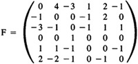
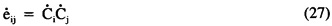

by Abraham Kandel
CRC Press, CRC Press LLC
ISBN: 084934297x Pub Date: 11/01/91
|
|
Fuzzy Expert Systems
by Abraham Kandel CRC Press, CRC Press LLC ISBN: 084934297x Pub Date: 11/01/91 |
| Previous | Table of Contents | Next |
A FCM connection matrix stands behind every FCM graph. These matrices are causal FAMs and can be easily manipulated. However, fuzzy knowledge is much easier to acquire FCM graphic form. This suggests a mathematical transform strategy: transform FCM graphs to FCM matrices, combine the matrices, then inverse transform back to a combined FCM graph. The key insight is that a FCM is a causal FAM. Then, the natural way to combine or superimpose the FCM matrices is simply to add them pointwise. Moreover, we can gate16-19 the ith FCM matrix Fi with the weight wi simply by multiplying the matrix by wi, yielding wiFi. (Here we assume wi = 0 indicates no credibility and wi = 1 indicates maximum credibility.) Alternatively we can gate Fi with wi by taking the pairwise minimum (t-norm) of wi with each element of Fi. For simplicity we assume multiplicative gating.
FCMs that differ in number or kind of concept nodes can still be combined by introducing augmented connection matrices. Intuitively, if only the ith expert discusses concept C, then C is a phantom node in the other FCMs, where it has no causal connectivity. Thus, it is represented in the other FCM matrices, except the C row and columns contain only values of 0. Specifically, suppose the total number (union) of nodes discussed by all the experts is n, which may be quite large with respect to the dimensions of a particular FCM matrix. Then we augment each FCM matrix Fi to be an n-by-n matrix, perhaps quite sparse. We permute row and columns as necessary to bring them into mutual coincidence, labeling the row/column concepts 1 to n. Then the values of augmented Fi can be combined by adding pointwise as shown in Figure 9.
The combined FCM F naturally weights the knowledge of the experts. If only one expert out of k asserts a particular causal connection, then that connection can have a maximum magnitude of 1/k. If 50 experts out of 100, all equally weighted, assert that a causal connection between Ci and Cj has weight + 1 and the other 50 assert that it has weight -1, then no causal connection occurs between Ci and Cj — fij = eF(Ci,Cj) = 0 — in the combined FCM F, and so on. We also note that if simple 0-thresholding is used in Equation 25, we can normalize F by either the combined weight with the maximum magnitude or by k to keep all fij in [-1,1], though this is not necessary for FAM or for causal-interpretation purposes. In general, instead of normalizing by k, when credibility weights w1, . . . , wk are used, the weight sum W = w1 + . . . wk should be used for normalization.
Let us examine a simple example: four unweighted experts provide the FCMs as shown in Figure 10.
For simplicity each edge is either - 1, 0, or + 1. There are six distinct concept nodes. Therefore, we can represent these FCMs in four 6-by-6 augmented connection matrices:
which combine to yield:

which inverse transforms to the FCM shown in Figure 11.
Suppose we input the state vector S = (1 1 0 0 0 0) into F. Then S F = (-1 4 -3 0 4 -1) → (0 1 0 0 1 0) = S′. Then S′ F = (0 1 -1 -1 2 -1) → (0 1 0 0 1 0) = S′. So input S stabilizes or resonates on S′. Similarly, the input patterns (1 1 1 1 1 1) and (0 0 0 0 1 1) evoke the resonant hidden pattern S′, which forms a dominant basin of attraction in the state space {0,1}6 with energy E(S′) = -S′ FST = -3. It is interesting to note how S′ behaves in the original matrices Fi. On F1, S′ maps into the empty set (0 0 0 0 0 0). On F2, S′ maps into (1 1 0 0 1 0), which has Hamming distance 1 from S′. On F3, S′ maps into the limit cycle (0 0 1 0 0 0) → (0 0 0 0 0 1) → (1 0 0 0 0 0) → (0 1 0 0 0 0) → (0 0 1 0 0 0). On F4, S′ maps into the limit cycle S′ → (0 0 0 0 1 0) → (1 0 0 0 0 0) → S′.
We briefly mention extensions of the FCM framework to learning networks. Here both edges and nodes are time-varying real functions. Node functions essentially sum sigmoid signal functions and combine passive decay, external input, and variable thresholds in forms similar to Equations 17 or 21. Learning occurs by modifying the causal edges in response to evidential changes. A combined FCM merely initiates a learning FCM, or periodically updates it. Two generic learning laws are the Hebbian20,23,33 and differential Hebbian35,37,41 learning laws:

both of which usually contain many other similar terms. The classical Hebbian law, Equation 26, captures simple correlation or conjunctive learning. Though it abounds in neural models, it is unacceptable in causal models. For Equation 26 grows causal connections on the basis of concomitant activation. Consequently, if any two nodes are active in the network, Equation 26 inductively infers a causal connection between them. These causal connections are almost always spurious. Moreover, since the node functions Ci and Cj are nonnegative, Equation 26 implies that eij exponentially increases to its maximum value, after which no learning occurs. The differential Hebbian law, Equation 27 was motivated by the causal descriptions of the empiricist philosophers35,41 David Hume (“constant conjunction of events”) and John Stuart Mill (“concomitant variation”).
| Previous | Table of Contents | Next |
){kind=link}
){kind=link}
){kind=link}